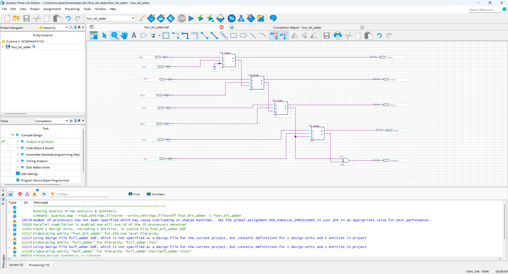
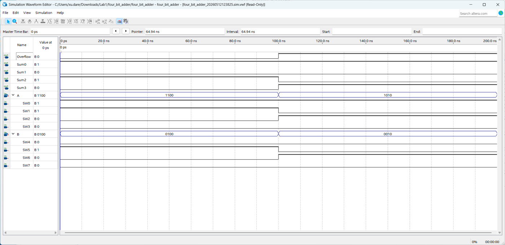

Overview项目概述
Designed and verified a 4-bit ripple-carry adder in Intel Quartus Prime by chaining four full-adder building blocks targeting the Cyclone V (DE1-SoC) FPGA. The design was captured as a schematic and validated through functional simulation, confirming correct sum and carry-out behavior across input vectors.在 Intel Quartus Prime 中通过级联四个全加器模块，设计并验证了一个面向 Cyclone V（DE1-SoC）FPGA 的 4 位行波进位加法器。设计以原理图形式录入，并通过功能仿真验证，确认在各种输入向量下的和与进位输出均正确。
Gallery图库
Click any image to enlarge.点击任意图片可放大。

Quartus Prime schematic of the 4-bit ripple-carry adder built from cascaded full-adder blocks.由级联全加器模块构建的 4 位行波进位加法器的 Quartus Prime 原理图。

Functional simulation waveform verifying sum and carry-out outputs for the 4-bit adder.验证 4 位加法器和与进位输出的功能仿真波形。